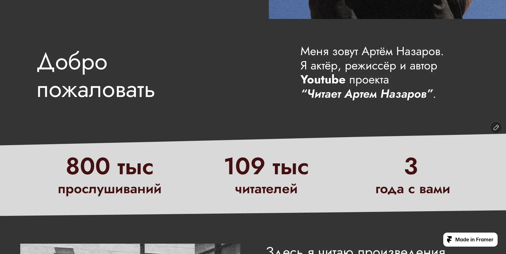
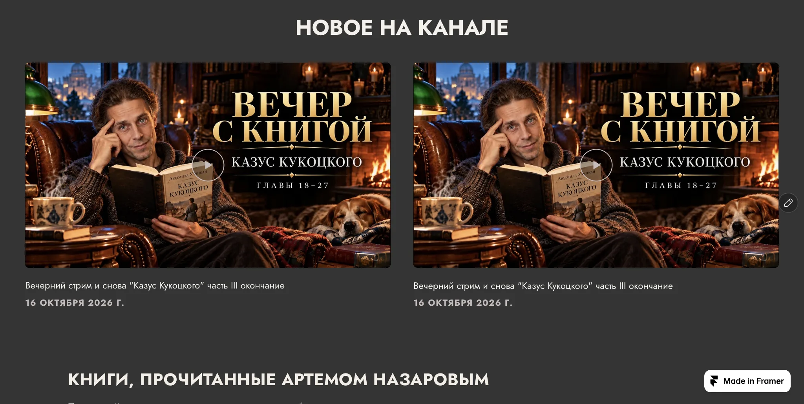
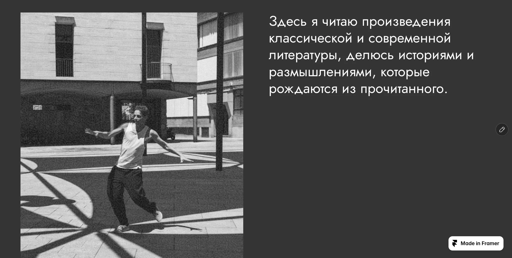
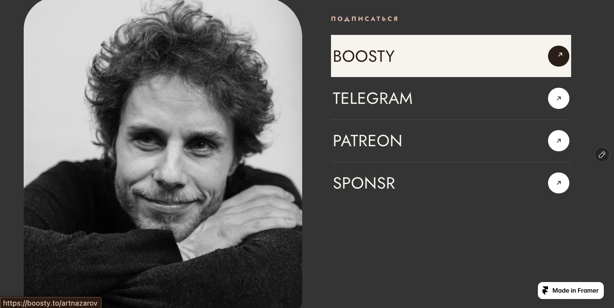
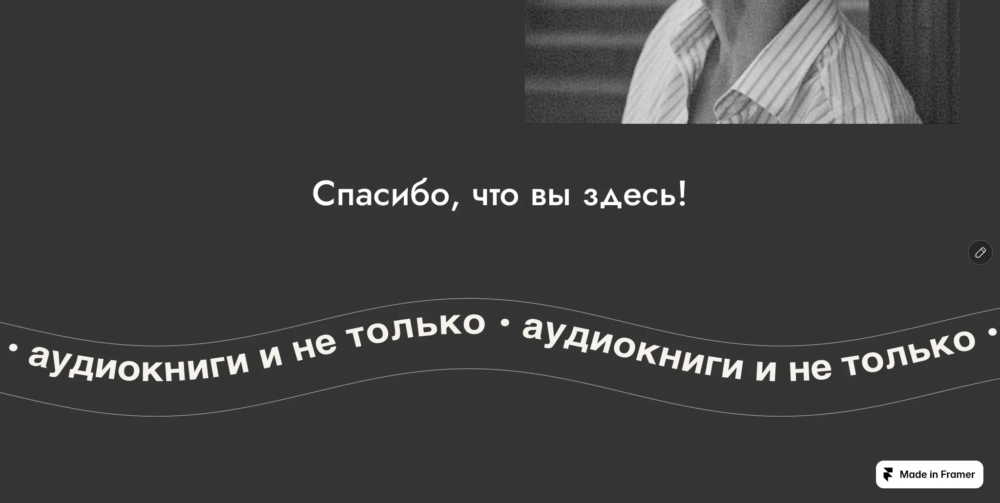

№ 007 · NAZAROV.HTML
Читает Артем Назаров
Сайт YouTube-проекта о чтении и аудиокнигах
- Роль
- Дизайн + Framer-код
- Тип
- Клиентский проект
- Статус
- Запущен
- Инструменты
- Framer · React · TypeScript · YouTube Data API v3 · SoundCloud

01 Контекст и цели
«Читает Артем Назаров» (Artem Nazarov Reads) — YouTube-проект о чтении и аудиокнигах, канал @ArtNazarovBooks. Интерфейс сайта — на русском.
Основная аудитория — русскоязычные люди примерно 40+, в большинстве живущие за пределами России. Они ценят ясность и знакомые паттерны больше, чем дизайн-тренды.
Сайт работает как мостик между YouTube и платными платформами: зритель видит свежие выпуски, может послушать книгу прямо на странице и в один клик перейти на Boosty, Patreon или Sponsr.
Сайт запущен 16 сентября 2026 года. За первый месяц после запуска канал вырос примерно на 1000 подписчиков, на Boosty пришли 20 новых. Сколько из них пришло именно с сайта, пока отдельно не измеряется.
02 Задача
Сделать сайт современным, не делая его непривычным: без тяжёлого моушна, WebGL и перехвата скролла.
03 Концепция и визуальный стиль
Принцип — «дизайн для привычки, а не для трендов». Современность передаётся типографикой, композицией и фотографией.
Тёмная редакционная система: графитовые фоны, пыльная роза как единственный акцент, никаких теней и мягкое замедление easeOutExpo.
Цвет
- Графит#2D2D2D · фон
- Тёмный графит#343434 · поверхности
- Пыльная роза#E7B7A6 · акцент
Шрифты
- Frauncesантиква
- Manropeгротеск
- IBM Plex Monoмоноширинный
04 Ключевые UX/UI-решения
Свежие выпуски — сами
Блок LatestEpisodes подтягивает новые видео через YouTube Data API v3: сайт не устаревает без ручных правок.
Каталог с поиском
BooksCatalog — сетка книг с поиском и карточкой-оверлеем для каждой книги, со ссылками на платформы.
Слушать прямо на сайте
Аудиокниги из SoundCloud встроены в страницу — не нужно уходить на другую платформу.
Поддержать проект
Отдельные компоненты для подписки и донатов, способы оплаты раскрываются по клику.
05 Экраны, макеты и адаптив










06 Реализация
- Framer code components на React и TypeScript: LatestEpisodes, BooksCatalog, SoundCloudAudiobooks, SubscribeLinks, SupportProject и другие.
- Ссылки на платформы и поля метаданных книги вынесены в property controls — каталог редактируется без кода.
- Адаптивные брейкпоинты — через scoped <style> внутри компонента.
- В режиме редактирования Framer компоненты не обращаются к API, чтобы не тратить квоту.